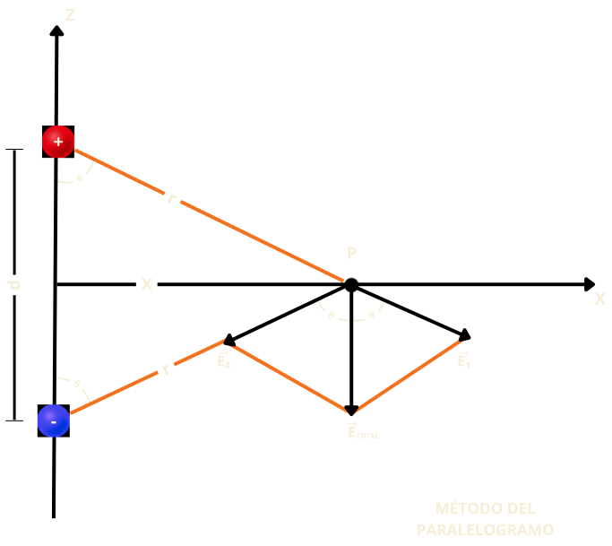

Dipolo eléctrico
Definición: Es una agrupación o acomodo de dos cargas puntuales de igual
magnitud, pero de signo diferente, separadas por una distancia “d”, generalmente del orden de dimensiones
atómicas. Uno de los aspectos más característicos del dipolo eléctrico es que su comportamiento eléctrico
está determinado por la magnitud del momento dipolar \(p\).
Los dipolos eléctricos aparecen en cuerpos aislantes dieléctricos (material mal conductor de la
electricidad).
Un material dieléctrico puede usarse como aislante eléctrico; además, si es sometido a un campo eléctrico
externo puede establecerse en él un campo eléctrico interno, a diferencia de los materiales aislantes con
los que suelen confundirse. Todos los materiales dieléctricos son aislantes, pero no todos los aislantes son
dieléctricos. Los dieléctricos son materiales generalmente no metálicos: aire, agua, aceite de
transformador, cuarzo, polietileno, neopreno, pvc, aislantes plásticos, etc. 😊
Campo eléctrico generado por un dipolo eléctrico:
Consideremos el dipolo eléctrico de la siguiente figura:

Observamos que:
- El eje \(x\) es el bisector de la línea que une \(q_1\) con \(q_2\).
- \(r\) es la distancia de \(q_1\) o \(q_2\) al punto \(P\).
- \(\theta\) es el ángulo formado por la recta que une a las cargas y las líneas de acción, pero también
es al ángulo formado por los campos eléctricos generados por cada carga y su resultante.
- Por simetría: \(E_1 = E_2\).
- \(E_1 + E_2 = E_{TOTAL}\)
-
Las componentes horizontales de los campos generados por las cargas se cancelan.
Usando el principio de superposición, tenemos que:
\[
\left| \left| \vec{E}_1 \right|\right| = \left| \left| \frac{\vec{F}_1}{q_0} \right|\right|; \ \ \left|
\left| \vec{F}_1 \right|\right| = \left| \left| \frac{1}{4\pi\varepsilon_0}\frac{q_1q_0}{r^2}
\right|\right|; \ \ \left|
\left| \vec{E}_1 \right|\right| = \left| \left| \frac{1}{4\pi\varepsilon_0}\frac{q_1}{r^2}
\right|\right|;
\]
\[
\left| \left| \vec{E}_2 \right|\right| = \left| \left| \frac{\vec{F}_2}{q_0} \right|\right|; \ \ \left|
\left| \vec{F}_2 \right|\right| = \left| \left| \frac{1}{4\pi\varepsilon_0}\frac{q_2q_0}{r^2}
\right|\right|; \ \ \left|
\left| \vec{E}_2 \right|\right| = \left| \left| \frac{1}{4\pi\varepsilon_0}\frac{q_2}{r^2}
\right|\right|;
\]
Además:
\[
\vec{E}_{1x} + \vec{E}_{2x} = \vec{0}
\]
Entonces:
\[
\vec{E}_{1x} + \vec{E}_{2x} = \vec{E}_{TOTAL}
\]
\[
\vec{E}_{TOTAL} = -2\vec{E}_{1}\cos{\theta}\hat{k} \ \ \ \ o \ \ \ \ \vec{E}_{TOTAL} =
-2\vec{E}_{2}\cos{\theta}\hat{k}
\]
cuya magnitud es: \(
\left| \left|\vec{E}_{TOTAL}\right|\right| = \left| \left|
-2\frac{1}{4\pi\varepsilon_0}\frac{q_1}{r^2}\cos{\theta} \right|\right|
\ \ \ \ o \ \ \ \ \left| \left|\vec{E}_{TOTAL}\right|\right| = \left| \left|
-2\frac{1}{4\pi\varepsilon_0}\frac{q_2}{r^2}\cos{\theta} \right|\right|
\)
Hasta aquí termina la intervención de los alumnos. Ahora, continúa el profesor con lo siguiente:
Por otra parte: \(\cos{\theta} =\frac{d/2}{r}\); recordemos que todo debe estar en función de las cargas y
la separación que hay entre ellas, esa es la información que tenemos.
Continúan los jóvenes participando en el modelo matemático.
Sustituyendo \(\cos{\theta} =\frac{d/2}{r}\) en \(\left| \left|\vec{E}_{TOTAL}\right|\right| = \left| \left|
-2\frac{1}{4\pi\varepsilon_0}\frac{q_1}{r^2}\cos{\theta} \right|\right|\), nos queda:
\[
\left| \left|\vec{E}_{TOTAL}\right|\right| = 2\frac{1}{4\pi\varepsilon_0}\frac{q_1}{r^2}\frac{d}{2r}
\]
\[
\left| \left|\vec{E}_{TOTAL}\right|\right| = \frac{1}{4\pi\varepsilon_0}\frac{q_1d}{r^3}
\]
Como hemos establecido, la definición de dipolo eléctrico incluye la distancia “d”, entonces debe quedar
establecida nuestra expresión como:
\[
si: r = \sqrt{x^2 + ({\frac{d}{2}})^2}
\]
\[
entonces: \left| \left|\vec{E}_{TOTAL}\right|\right| = \frac{1}{4\pi\varepsilon_0}\frac{q_1d}{[x^2 +
({\frac{d}{2}})^2]^{3/2}}
\]
Por otra parte, la expresión \([x^2 + ({\frac{d}{2}})^2]^{3/2}\) la podemos simplificar a \(x^3\),
considerando dos criterios:
- Recordando lo revisado, en física I, referido a cantidades.
- Revisando el binomio de Newton, visto en álgebra.
- Recordando lo revisado en física I: Una cantidad muy pequeña comparada
con una cantidad muy grande, \(r<< x\); cuando se suman o restan, se puede despreciar la cantidad
pequeña, que es lo que pasa en el denominador de nuestra expresión, pero cuando esa cantidad
“pequeña” multiplica a la cantidad “grande” no podemos despreciarla, que es lo que pasa en nuestro
numerador.
Entonces nuestra expresión quedaría como:
\[
\left| \left|\vec{E}_{TOTAL}\right|\right| = \frac{1}{4\pi\varepsilon_0}\frac{q_1d}{x^3}
\]
\[
por\ \ otra \ parte: q_1d \ se \ llama \ momento \ dipolar \ y \ se \ simboliza \ por \ p.
\]
\[
finalmente:
\left| \left|\vec{E}_{TOTAL}\right|\right| = \frac{1}{4\pi\varepsilon_0}\frac{p}{x^3}
\]
-
Recordando lo revisado en algebra:(Este
procedimiento es opcional para la revisión por parte del profesor en clase)
Primeramente, recordemos que:
\[
(a+b)^1 = a+b
\]
\[
(a+b)^2 = a^2+2ab+b^2
\]
\[
(a+b)^3 = a^3+3a^2b+3ab^2+b^3
\]
Observamos que, el desarrollo \((a+b)^n\):
- Tiene \(n + 1\) términos.
- Las potencias de “\(a\)” empiezan con “\(n\)” y van disminuyendo en 1 hasta llegar a cero.
- Las potencias de “\(b\)” comienzan con 0 y terminan con “\(n\)”.
- Para cada término las potencias suman “\(n\)”.
- El coeficiente del primer término es 1 y del siguiente es “\(n\)”.
- Los términos que equidistan de los extremos tiene coeficientes iguales.
Desarrollo del binomio de Newton:
\[
(a+b)^n = a^n + \frac{n}{1!} a^{n-1} b + \frac{n(n-1)}{2!} a^{n-2} b^2 + \frac{n(n-1)(n-2)}{3!}
a^{n-3} b^3 + \ldots
\]
Este desarrollo se puede aplicar a exponentes
fraccionarios \(a/b; \ si \ a>b \ y \ a>0\).
Considerando lo anterior para nuestro caso:
Realizarlo en conjunto con los alumnos.
\(
\left( x^2 + \left( \frac{d}{2} \right)^2 \right)^{3/2} =
\left( x^2 \right)^{3/2} +
\frac{3}{2} \left( x^2 \right)^{\frac{3}{2} - 1} \left[ \left( \frac{d}{2} \right)^2 \right]^1 +
\frac{3}{2} \cdot \frac{\frac{3}{2} - 1}{2!} \left( x^2 \right)^{\frac{3}{2} - 2} \left[ \left( \frac{d}{2}
\right)^2 \right]^2 +
\frac{3}{2} \cdot \frac{\frac{3}{2} - 1}{2!} \cdot \frac{\frac{3}{2} - 2}{1} \left( x^2 \right)^{\frac{3}{2}
-
3} \left[ \left( \frac{d}{2} \right)^2 \right]^3 + \ldots
\)
Reacomodando términos:
\[
= x^3 \left\{
1 + \frac{3}{2} \left[\frac{d}{2x}\right]^2
+ \frac{3}{2} \frac{1}{2!} \left(\frac{d}{2x}\right)^4
+ \frac{3}{2} \frac{\frac{3}{2} - 1}{2!} \frac{\frac{3}{2} - 2}{1} \left[\frac{d}{2x}\right]^6
+ \ldots
\right\}
\]
Observamos que dentro de las llaves hay otra expresión binomial
de la forma:
\[
\left[1+(\frac{d}{2x})^2\right]^{3/2}; \ donde
\]
\[
a=1
\]
\[
b= \left(\frac{d}{2x}\right)^2
\]
\[
n=3/2
\]
\[
si:x>>d,\ entonces: \frac{d}{2x} \rightarrow 0, \ \ \ y \ \
\left[1+\left(\frac{d}{2x}\right)^2\right]^{\frac{3}{2}} = 1
\]
Por lo tanto, nuestra expresión sobre la magnitud del campo eléctrico quedaría como:
\[
\left| \left|\vec{E}_{TOTAL}\right|\right| = \frac{1}{4\pi\varepsilon_0}\left[ \frac{p}{x^3+\left[1+
\left(\frac{d}{2x}\right)^2\right]^{3/2}}\right]
\]
\[
\left| \left|\vec{E}_{TOTAL}\right|\right| = \frac{1}{4\pi\varepsilon_0}\left[ \frac{p}{x^3}\right]
\]